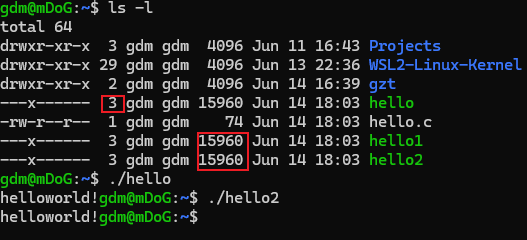
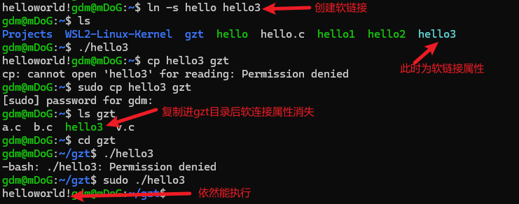
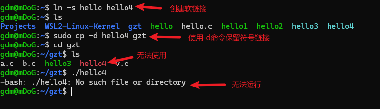
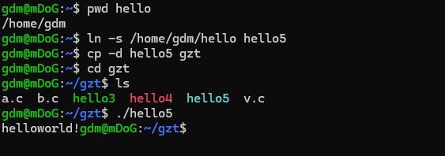

在 Linux 系统中，我们常常需要在不同位置引用同一个文件，或者希望通过某种方式为某个文件设置别名。这时候，文件“连接（Link）”机制就派上用场了。本文将详细介绍 Linux 下的硬链接（Hard Link）与符号链接（Symbolic Link，又称软链接）的概念、区别以及实际用法。
📌 一、什么是文件连接？
Linux 中的“连接”指的是为某个文件创建一个别名或指针，使你可以通过多个路径访问同一个文件内容。
连接分为两种类型：
- 硬链接（Hard Link）
- 符号链接（Symbolic Link 或 Soft Link）
🔗 二、硬链接（Hard Link）
1. 概念
硬链接是文件系统中的一种机制，它为同一个 inode（索引节点） 创建多个目录项。多个硬链接本质上是“平等的”，互为镜像。
2. 特点
- 同一个 inode 号，表示指向同一个文件内容。
- 删除其中一个链接不会影响其他链接。
- 不支持对目录创建硬链接（为避免环形结构）。
- 只能对同一文件系统内的文件创建。
3. 创建命令
ln 源文件 目标文件4.实验
查看链接数
ls -l第二列显示的数字表示链接数（包括自己）。

可见其所占用的存储空间是相同的，说明它们本质是相同的，指向同一incode，删除链接源文件，其他文件依然可以运行。
例如：
rm hello
./ hello2依然正常输出
三、符号链接（Symbolic Link / Soft Link）
1. 概念
符号链接类似 Windows 的快捷方式，它是一个特殊类型的文件，包含了另一个文件的路径。
2. 特点
- 是一个独立的文件，有自己的 inode。
- 链接路径，而非直接指向数据块。
- 删除源文件会导致符号链接失效（变成“悬挂链接”或“死链接”）。
- 可跨文件系统，也可指向目录。
:::bug
请使用绝对路径，否则拷贝文件到另一目录时会失去软连接
:::
3. 创建命令
ln -s 源文件 目标链接名4. 实验
拷贝文件保留软链接
cp -d [源] [目的]当使用相对路径时：


使用绝对路径：

🆚 四、硬链接 vs 符号链接
| 特性 | 硬链接（Hard Link） | 符号链接（Symbolic Link） |
|---|---|---|
| 是否有独立 inode | 否 | 是 |
| 是否可跨文件系统 | 否 | 是 |
| 是否可链接目录 | 否 | 是（需管理员权限） |
| 删除原文件后 | 内容仍保留 | 链接失效（悬挂链接） |
| 作用 | 多个文件名共享内容 | 文件快捷方式 |
🧪 五、补充
查找所有指向同一 inode 的文件
find . -inum <inode号>查找所有死链接
find . -xtype l✅ 六、总结
| 关键点 | 硬链接 | 符号链接 |
|---|---|---|
| 安全性 | 内容冗余，较安全 | 容易产生死链接 |
| 灵活性 | 不支持跨系统和目录 | 灵活，可指向任意路径 |
| 适用场景 | 本地备份，核心文件 | 快捷方式，快捷访问 |